Ce post me sert de
résumé des recherches menées par
les anthropologues, généticiens et historiens
sur les origines réelles de
l'Inde et ses liens profonds
avec le Tamil Nadu. Pour
quiconque s'intéresse à l'histoire
de l'Inde, c'est l'occasion
de découvrir une histoire factuelle,
loin des récits nationalistes, avec
toutes les nuances nécessaires. L’histoire
indienne est une mosaïque, le
résultat de plusieurs événements majeurs.
Comprendre son évolution est essentiel
pour tout le monde.
1. Le Socle Autochtone :
La Prédominance du Tamoul
Avant toute migration, la culture
de l'Inde est ancrée dans
le Sud. La plus ancienne
langue de l'Inde : Le
Tamoul ancien est considéré comme
l'une des plus anciennes langues
de la péninsule (dépassant les
5 000 ans). Elle possédait
déjà son propre système d'écriture
et une structure grammaticale propre.
Avant l'arrivée des Aryens :
Ni les Védas, ni le
Sanskrit, ni la religion que
l'on appelle aujourd'hui "Hindouisme"
n'existaient. Les langues parlées étaient
le Tamoul ancien et des
formes de Prakrit (langues vernaculaires
locales). La Civilisation de l'Indus
: Les scientifiques s'accordent à
dire que la brillante civilisation
de l'Indus (Mohenjo-Daro, Harappa)
était pré-védique. L'archéologie et
l'épigraphie montrent des similarités frappantes
entre les inscriptions de l'Indus
et les racines du Tamoul
ancien (théorie du proto-dravidien),
comme en témoigne la figure
du Pasupati (proto-Shiva).
2. L'Arrivée des "Aryens"
(La Preuve par l'ADN)
Les études en génétique des
populations (portant sur le chromosome
Y, transmis de père en
fils) ont confirmé ce que
l'archéologie soupçonnait : La Migration
des Steppes : Vers 2000
à 1500 av. J.-C.,
des vagues de populations nomades
originaires de la Steppe Pontique
(Europe de l'Est / Asie
Centrale) ont migré vers le
Nord-Ouest de l'Inde. Ces migrants
étaient majoritairement des hommes. Le
marqueur R1a : Cet ADN
(Haplogroupe R1a-Z93) est le marqueur
direct de cette migration. La
fracture génétique et sociale moderne
: Au Nord et dans les
Castes Supérieures (Brahmânes) : Le
taux de R1a atteint des
records mondiaux (60 % à
70 % chez les Brahmânes
du Nord, et 40 %
à 55 % chez ceux
du Sud). Au Sud (Tamil
Nadu, Kerala) : Les taux
de R1a tombent très bas
(5 % à 15 %),
la population ayant conservé la
lignée ancestrale des populations autochtones
d'Asie du Sud (Ancestral South
Indian - ASI).
3. L'Appropriation Culturelle et
la Naissance des Castes
L'introduction du système de castes
inégalitaire vient du choc entre
ces deux mondes. Le système
spirituel d'origine (Le cheminement vers
le Blanc) Avant la dérive
des castes, la spiritualité autochtone
fonctionnait comme un système d'excellence
spirituelle, comparable aux ceintures d'arts
martiaux modernes. Les pratiquants évoluaient
à travers des niveaux symbolisés
par des couleurs : du Noir
⚫, en passant par le
Bleu 🔵, le Vert 🟢,
le Rouge 🔴, le Jaune
🟡, jusqu'au Blanc ⚪.
Ceux qui atteignaient le sommet
de la conscience spirituelle et
de la connaissance après plusieurs
années de persévérance portaient des
vêtements blancs. Ces sages et
enseignants respectés étaient appelés Brahmânes
(au sens de "ceux qui
ont réalisé le divin"). On
ne nait pas Brahmâne, on
le devient par le mérite
et la sagesse. Le détournement
par les migrants des Steppes
Les migrants venus des steppes,
aux traits physiques distincts et
au teint plus clair, ont
observé ce système hautement respecté.
Pour asseoir leur pouvoir sur
les populations autochtones sans passer
par des décennies d'efforts spirituels,
ils ont opéré une manipulation
historique : Ils ont affirmé que
puisque leur teint était naturellement
clair (blanc), ils étaient Brahmânes
de naissance, choisis par les
dieux. Ils ont ainsi figé
un système de mérite spirituel
en un système de castes
héréditaire et inégalitaire, basé sur
la naissance. Le Sanskrit est
né à cette période, fusionnant
les structures des langues des
steppes (indo-européennes) avec le
vocabulaire et les concepts du
Tamoul ancien et du Prakrit.
Les Védas ont été composés
en intégrant (et en s'appropriant)
une immense partie des connaissances
scientifiques, astronomiques et philosophiques des
populations autochtones.
4. La Médecine Traditionnelle et
la Répression des Siddhars
Le Tamil Nadu occupe une
place unique en Inde : c'est
le seul État à posséder
son propre système médical ancestral
complet, distinct de l'Ayurveda :
le Siddha Maruthuvam (Médecine
Siddha). Fondée par les Siddhars,
des sages ascètes et scientifiques
tamouls, la médecine Siddha repose
sur une connaissance avancée des
plantes, de l'alchimie des métaux
(Vadham) et de la longévité
du corps (Kaya Siddhi). La
persécution des Siddhars Parce qu'ils
étaient des rebelles sociaux, qu'ils
refusaient le système des castes,
les rituels védiques et l'autorité
des nouveaux prêtres (Aryens), les
Siddhars ont subi une violente
répression. Leurs écrits ont été
persécutés et censurés (brûlés ou
jetés à l'eau), obligeant les
maîtres survivants à coder leurs
textes médicaux en langage secret
(Paribhasha) et à s'exiler dans
les montagnes sacrées (comme les
collines de Sathuragiri). Une grande
partie de l'Ayurveda actuel s'est
construite en s'appropriant et en
traduisant les découvertes fondamentales de
la médecine Siddha des populations
autochtones.
Conclusion
L'histoire officielle de l'Inde
a longtemps été écrite par
les vainqueurs pour légitimer un
ordre social. Aujourd'hui, la génétique,
l'archéologie et l'étude des textes
anciens (notamment tamouls) permettent de
restaurer la vérité : la culture
védique et le sanskrit ne
sont pas les fondations de
l'Inde, ils sont le résultat
d'une réécriture et d'une appropriation
de la culture pré-védique d'origine
dravidienne. Comprendre cela, ce n'est
pas diviser, c'est redonner à
l'Inde sa véritable histoire originale.


![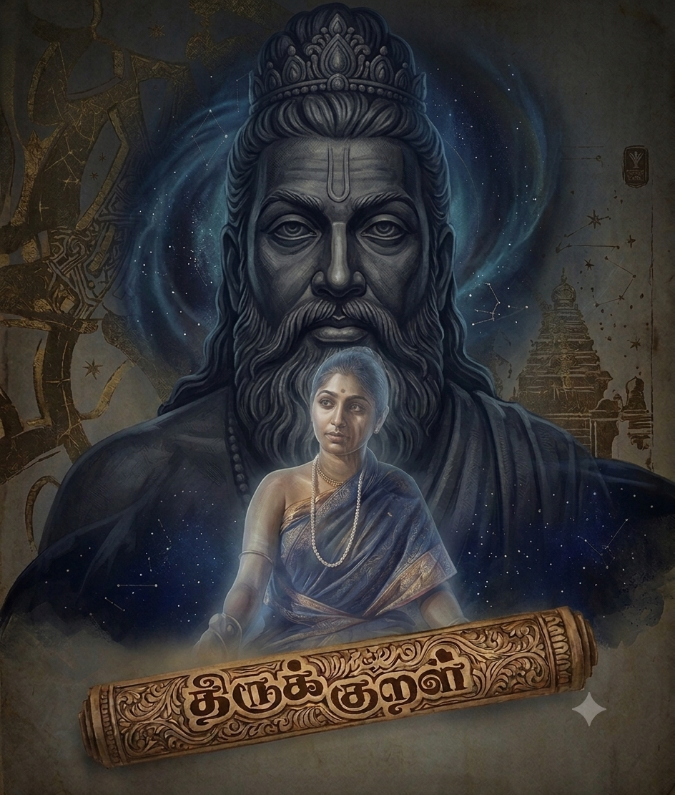 Défi relevé Ne trouvant pas de version française complète du Thirukkural en ligne, beaucoup d’éditions étant incomplètes ou difficiles d’accès, j’ai choisi d’entreprendre moi-même sa traduction afin de le rendre accessible à travers ce Thirukkural. Ce projet est aujourd’hui une belle réussite, et je suis heureuse d’avoir relevé ce défi. Ce site s’adresse à toutes les personnes qui souhaitent découvrir et lire le Thirukkural, véritable guide de vie des Tamouls, reflet de leur philosophie, de leur sagesse et des valeurs profondes transmises par la culture tamoule. View](images/valuvar.jpg){kind=link}
{kind=link}
![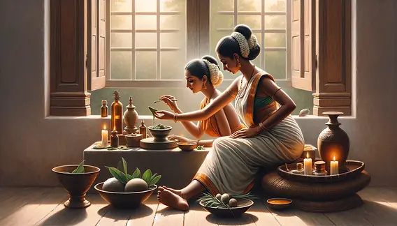 📜 L'Histoire Cachée 2 Je reviens sur mon post précédent en effet l'histoire de cette période est immense, j'ai donc choisi d'en vulgariser un peu les grandes lignes pour ce post. Même si nous n'avons évidemment pas de preuve absolue à 100 % pour chaque détail, les grands traits de ce récit sont aujourd'hui majoritairement acceptés par la science. Pour le reste, là où les historiens discutent encore, la logique des choses et la cohérence des indices nous orientent clairement vers ce scénario. Concernant la prise de pouvoir liée à la migration des porteurs du chromosome Y (Haplogroupe R1a), il y a une nuance cruciale à apporter : ces migrants ne se sont pas autoproclamés Brahmânes du jour au lendemain juste par la couleur de peau. Ils ont assis leur domination grâce à un outil politique et psychologique ultra-puissant : le rituel. Ces lignées se sont d'abord introduites majoritairement en tant que Brahmânes, mais elles ont aussi intégré d'autres communautés très influentes. On retrouve ainsi leur empreinte chez les guerriers Kshatriyas ou les élites agricoles Jats, tissant des alliances stratégiques profondes avec les pouvoirs locaux de l'époque. Dans la vision védique qu'ils ont importée, le monde ne pouvait continuer à tourner que si des prêtres accomplissaient des sacrifices par le feu très précis, en récitant des formules sacrées (les prémices du Sanskrit) que seuls eux connaissaient. Les chefs locaux autochtones, pour légitimer leur propre pouvoir politique ou s'attirer les faveurs des dieux de ces nouveaux venus (comme Indra, le dieu de la guerre et de l'orage), ont tout simplement commencé à engager ces prêtres. Le pouvoir des Brahmânes est né de ce monopole technologique et spirituel : ils étaient les seuls intermédiaires capables de parler aux dieux. Ce système de fonction s'est ensuite figé au fil des siècles pour devenir héréditaire. Une grande partie du résumé du poste précédent est accepté majoritairement par tous. Il y a quelques faits admis et reconnus par des historiens, anthropologues et chercheurs tamouls. Bien que certains détails de cette transition fassent encore l'objet de débats académiques acharnés, cette lecture des faits est de loin la plus cohérente face aux découvertes génétiques et archéologiques récentes. Si ces réalités peinent encore à être pleinement acceptées à l'échelle nationale en Inde, c'est que l'histoire officielle a longtemps été écrite par les élites du Nord pour légitimer un récit national homogène et sanskritisé. Redonner sa place au socle dravidien et autochtone du Sud, ce n'est pas réécrire l'histoire par idéologie, c'est simplement rétablir un équilibre scientifique indispensable. View](images/siddhar.jpg){kind=link}
![📜 L'Histoire Cachée Ce post me sert de résumé des recherches menées par les anthropologues, généticiens et historiens sur les origines réelles de l'Inde et ses liens profonds avec le Tamil Nadu. Pour quiconque s'intéresse à l'histoire de l'Inde, c'est l'occasion de découvrir une histoire factuelle, loin des récits nationalistes, avec toutes les nuances nécessaires. L’histoire indienne est une mosaïque, le résultat de plusieurs événements majeurs. Comprendre son évolution est essentiel pour tout le monde. 1. Le Socle Autochtone :La Prédominance du Tamoul Avant toute migration, la culture de l'Inde est ancrée dans le Sud. La plus ancienne langue de l'Inde : Le Tamoul ancien est considéré comme l'une des plus anciennes langues de la péninsule (dépassant les 5 000 ans). Elle possédait déjà son propre système d'écriture et une structure grammaticale propre. Avant l'arrivée des Aryens : Ni les Védas, ni le Sanskrit, ni la religion que l'on appelle aujourd'hui "Hindouisme" n'existaient. Les langues parlées étaient le Tamoul ancien et des formes de Prakrit (langues vernaculaires locales). La Civilisation de l'Indus : Les scientifiques s'accordent à dire que la brillante civilisation de l'Indus (Mohenjo-Daro, Harappa) était pré-védique. L'archéologie et l'épigraphie montrent des similarités frappantes entre les inscriptions de l'Indus et les racines du Tamoul ancien (théorie du proto-dravidien), comme en témoigne la figure du Pasupati (proto-Shiva). 2. L'Arrivée des "Aryens"(La Preuve par l'ADN) Les études en génétique des populations (portant sur le chromosome Y, transmis de père en fils) ont confirmé ce que l'archéologie soupçonnait : La Migration des Steppes : Vers 2000 à 1500 av. J.-C., des vagues de populations nomades originaires de la Steppe Pontique (Europe de l'Est / Asie Centrale) ont migré vers le Nord-Ouest de l'Inde. Ces migrants étaient majoritairement des hommes. Le marqueur R1a : Cet ADN (Haplogroupe R1a-Z93) est le marqueur direct de cette migration. La fracture génétique et sociale moderne : Au Nord et dans les Castes Supérieures (Brahmânes) : Le taux de R1a atteint des records mondiaux (60 % à 70 % chez les Brahmânes du Nord, et 40 % à 55 % chez ceux du Sud). Au Sud (Tamil Nadu, Kerala) : Les taux de R1a tombent très bas (5 % à 15 %), la population ayant conservé la lignée ancestrale des populations autochtones d'Asie du Sud (Ancestral South Indian - ASI). 3. L'Appropriation Culturelle etla Naissance des Castes L'introduction du système de castes inégalitaire vient du choc entre ces deux mondes. Le système spirituel d'origine (Le cheminement vers le Blanc) Avant la dérive des castes, la spiritualité autochtone fonctionnait comme un système d'excellence spirituelle, comparable aux ceintures d'arts martiaux modernes. Les pratiquants évoluaient à travers des niveaux symbolisés par des couleurs : du Noir ⚫, en passant par le Bleu 🔵, le Vert 🟢, le Rouge 🔴, le Jaune 🟡, jusqu'au Blanc ⚪. Ceux qui atteignaient le sommet de la conscience spirituelle et de la connaissance après plusieurs années de persévérance portaient des vêtements blancs. Ces sages et enseignants respectés étaient appelés Brahmânes (au sens de "ceux qui ont réalisé le divin"). On ne nait pas Brahmâne, on le devient par le mérite et la sagesse. Le détournement par les migrants des Steppes Les migrants venus des steppes, aux traits physiques distincts et au teint plus clair, ont observé ce système hautement respecté. Pour asseoir leur pouvoir sur les populations autochtones sans passer par des décennies d'efforts spirituels, ils ont opéré une manipulation historique : Ils ont affirmé que puisque leur teint était naturellement clair (blanc), ils étaient Brahmânes de naissance, choisis par les dieux. Ils ont ainsi figé un système de mérite spirituel en un système de castes héréditaire et inégalitaire, basé sur la naissance. Le Sanskrit est né à cette période, fusionnant les structures des langues des steppes (indo-européennes) avec le vocabulaire et les concepts du Tamoul ancien et du Prakrit. Les Védas ont été composés en intégrant (et en s'appropriant) une immense partie des connaissances scientifiques, astronomiques et philosophiques des populations autochtones. 4. La Médecine Traditionnelle etla Répression des Siddhars Le Tamil Nadu occupe une place unique en Inde : c'est le seul État à posséder son propre système médical ancestral complet, distinct de l'Ayurveda : le Siddha Maruthuvam (Médecine Siddha). Fondée par les Siddhars, des sages ascètes et scientifiques tamouls, la médecine Siddha repose sur une connaissance avancée des plantes, de l'alchimie des métaux (Vadham) et de la longévité du corps (Kaya Siddhi). La persécution des Siddhars Parce qu'ils étaient des rebelles sociaux, qu'ils refusaient le système des castes, les rituels védiques et l'autorité des nouveaux prêtres (Aryens), les Siddhars ont subi une violente répression. Leurs écrits ont été persécutés et censurés (brûlés ou jetés à l'eau), obligeant les maîtres survivants à coder leurs textes médicaux en langage secret (Paribhasha) et à s'exiler dans les montagnes sacrées (comme les collines de Sathuragiri). Une grande partie de l'Ayurveda actuel s'est construite en s'appropriant et en traduisant les découvertes fondamentales de la médecine Siddha des populations autochtones. Conclusion L'histoire officielle de l'Inde a longtemps été écrite par les vainqueurs pour légitimer un ordre social. Aujourd'hui, la génétique, l'archéologie et l'étude des textes anciens (notamment tamouls) permettent de restaurer la vérité : la culture védique et le sanskrit ne sont pas les fondations de l'Inde, ils sont le résultat d'une réécriture et d'une appropriation de la culture pré-védique d'origine dravidienne. Comprendre cela, ce n'est pas diviser, c'est redonner à l'Inde sa véritable histoire originale. View](images/TamilQueen.jpg){kind=link}
![L’amour avec un grand A 💫 L’amour ne se résume pas aux relations intimes entre deux personnes. Si un mari ou une épouse est incapable d’aimer sans relation sexuelle alors il ne s’agit pas d’un amour inconditionnel Cela peut signifier que la relation repose surtout sur la satisfaction de désirs personnels et que l’autre est perçu davantage comme un objet de désir que comme une personne à part entière. Dans ce cas l’amour peut sembler égoïste car il dépend en partie de ce que l’autre apporte pour combler un besoin personnel. À l’inverse lorsqu’une personne continue d’aimer de rester présente et de soutenir l’autre quelles que soient les circonstances indépendamment de ses propres désirs alors on peut parler d’un amour plus profond plus authentique. Le véritable amour selon moi se reconnaît dans la fidélité du cœur face aux épreuves une relation qui traverse les difficultés les changements et les manques tout en restant unie. Si un partenaire est incapable de rester dans la relation dès lors que ses désirs ne sont plus satisfaits alors il s’agit davantage d’un amour conditionnel centré sur soi que d’un amour véritablement inconditionnel. View](images/alba.jpg){kind=link}
![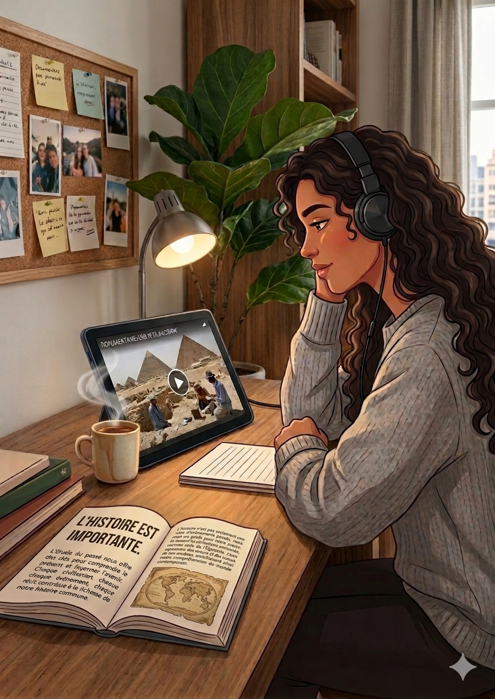 L'histoire c'est fascinant 💫 L'histoire..⭐️ J'ai toujours été fasciné par l'histoire et la découverte des grandes civilisations. C'est un voyage captivant à travers le temps qui permet de comprendre la complexité du monde. Pourtant, rien n'est plus enrichissant que de plonger dans mes propres racines. Explorer ma culture et ma civilisation qui compte parmi les plus riches de la planète procure une fierté unique. L'histoire n'est pas une simple liste de dates ; elle est vivante, incroyable et elle explique qui nous sommes aujourd'hui. View](images/Histoire.png){kind=link}
![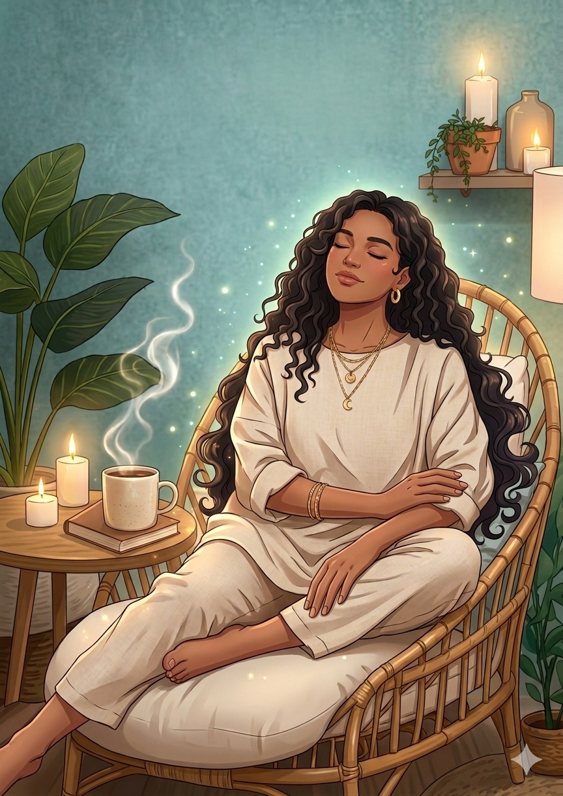 Une page se tourne 💫 ⭐️ Neutral perspective on Tamil Nadu politics ⭐️ Le parti sortant du Tamil Nadu fait partie des plus corrompus, gangrené par le népotisme et la politique familiale. Et malgré ça, vous osez déjà attaquer un gouvernement arrivé au pouvoir il y a à peine deux semaines ? Si vous aviez un minimum de dignité, de respect de soi et d’honnêteté intellectuelle, vous comprendriez que tout ce que vous voyez en ce moment, ce sont surtout les dégâts laissés par votre propre camp après toutes ces années au pouvoir. Vous voir pleurnicher et aboyer est très divertissant. Continuez ainsi pendant les cinq prochaines années, voire plus, parce que je ne pense pas que vous reviendrez au pouvoir un jour. View](images/Peace.png){kind=link}
![Retour aux sources 💫 La plus ancienne représentation souvent associée à une forme proto-shivaïque a été découverte dans la civilisation de l’Indus, l’une des plus anciennes civilisations urbaines connues, datant de plus de 5 000 ans. À cette époque, il n’existe aucune preuve d’une influence védique ou aryen dans cette région du sous-continent indien. La culture védique apparaît en effet plus tardivement. C’est dans ce contexte que certains chercheurs comme Asko Parpola et Iravatham Mahadevan ont proposé l’hypothèse selon laquelle la civilisation de l’Indus pourrait avoir été liée à des populations de langue tamoule ancienne, ou à une phase précoce de ces cultures. Dans cette perspective, les chercheurs ont remarqué des similarités frappantes entre les anciens scripts tamouls et ceux trouvés dans l'Indus. Il est parfois suggéré que les scripts ou symboliques de l’Indus pourraient être associés au script et à la symbolique du sud de l’Inde, notamment de l’aire tamoule, où la culture tamoule est la plus anciennement attestée de manière continue. View](images/Siva.jpeg){kind=link}
![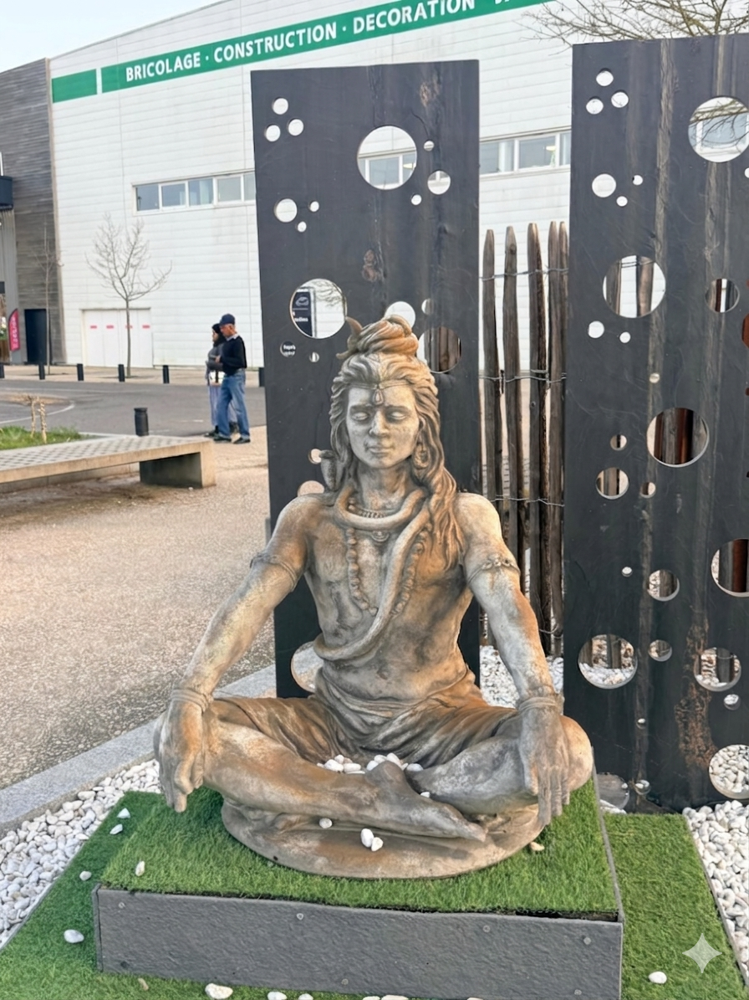 Quand le zen s'invite ✨️💫 Gros coup de cœur en allant au magasin : je suis tombée sur cette superbe statue de Shiva en pleine méditation, installée sur le parvis. C’est fou comme cette silhouette majestueuse, au milieu des chariots et du béton, nous transporte immédiatement ailleurs en un clin d'œil. Une vraie belle surprise qui prouve que l'inspiration est partout ! Je trouve cette vidéo intéressante Pour mieux comprendre ce personnage fascinant qui explique sa symbolique: Who is Lord Shiva? 🔱 View](images/Sivan.png){kind=link}
![Tout le monde débute un jour🦋 Il y a des gens qui parlent comme si ils étaient nés avec la science infuse.😂 et excellents dans tous les domaines dès le premier jour. Il faut se calmer un peu. Tout le monde a le droit de débuter, d’apprendre, de faire des erreurs et de prendre ses repères. Il y a un début à tout. Personne ne devient parfait du jour au lendemain. Avant de critiquer quelqu’un qui essaie, souvenez-vous qu’un jour vous aussi vous avez commencé quelque part sans tout maîtriser. Les personnes qui osent se lancer méritent du respect, pas des moqueries. Critiquer est facile. Apprendre, évoluer et persévérer demande bien plus de courage. Il faut laisser le temps aux gens de commencer. View](images/IMG-20260510-WA0005.jpg){kind=link}
![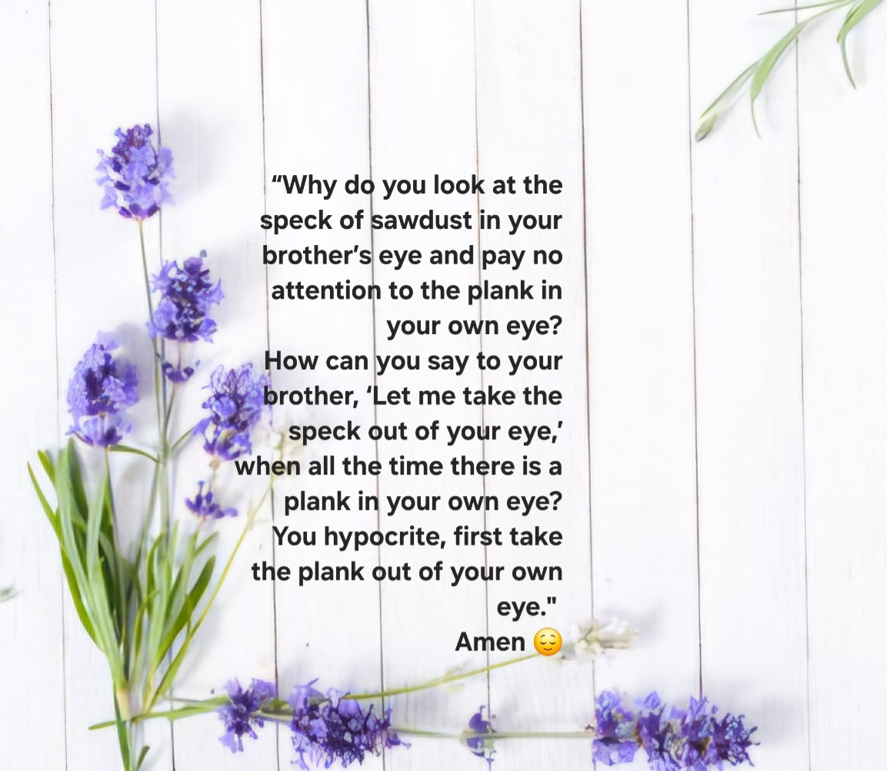 Le bonheur ne se vole pas 🦋 Je comprends pas pourquoi certaines personnes semblent constamment chercher à détruire la vie des autres, à s’immiscer dans des couples, à prendre le mari ou la femme de quelqu’un, ou encore à s’approprier le bonheur qui ne leur appartient pas ? C’est difficile à comprendre, car le bonheur ne devrait jamais reposer sur la souffrance des autres. On peut construire sa propre vie, trouver l’amour et la satisfaction sans avoir besoin de briser celle de quelqu’un d’autre. Au fond, le véritable bonheur est celui qui est gagné honnêtement, dans le respect, la bienveillance et la paix, et non celui qui est arraché au détriment des autres. Tu peux être heureux sans détruire le bonheur des autres. View](images/Be.jpg){kind=link}
{kind=link}
{kind=link}
{kind=link}
{kind=link}
{kind=link}
{kind=link}
{kind=link}
{kind=link}
{kind=link}
{kind=link}
{kind=link}
![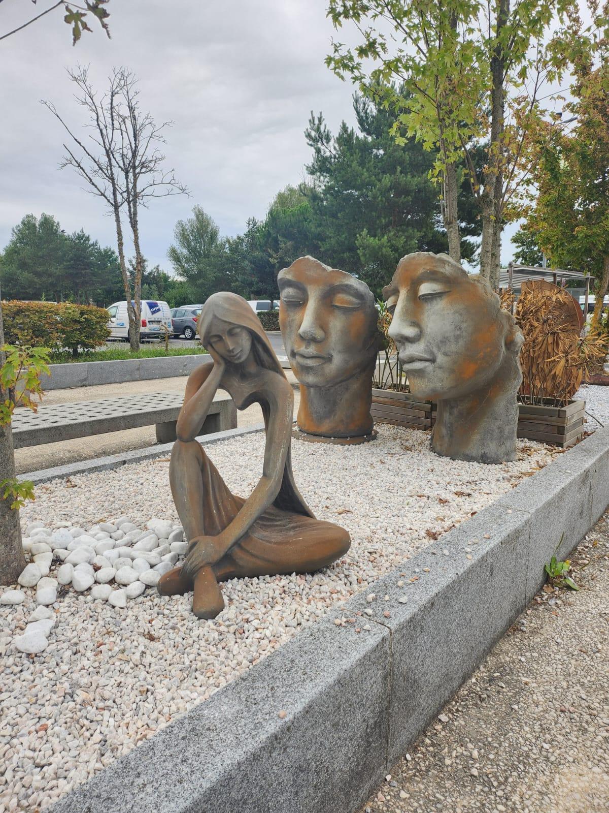 Le voyage de l’esprit La pensée voyage en silence, elle traverse le monde sans bouger d’un pas. Invisible mais immense, elle construit, elle détruit, elle rêve. Elle peut enfermer, ou bien ouvrir des portes qu’on croyait fermées. Elle est à la fois lumière et labyrinthe, torrent et miroir. Tout commence en elle : les choix, les peurs, les élans, les créations les plus folles comme les doutes les plus profonds. Alors prends soin de ta pensée. Nourris-la de clarté, de vérité, de douceur. Car ce que tu penses, tu le deviens. View](images/statue2.jpeg){kind=link}
{kind=link}
![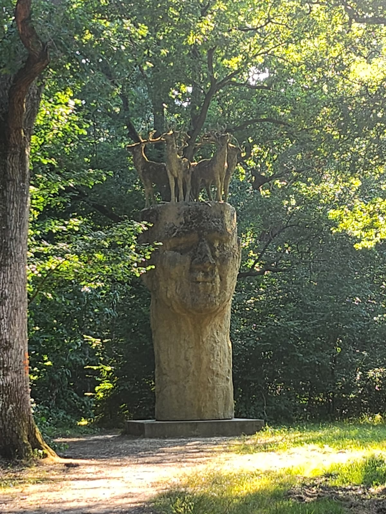 Le gardien de la paix Je vais souvent marcher en forêt, c’est un rituel, un moment à moi. Je suis tombée sur un arbre pas comme les autres. Il était sculpté, silencieusement majestueux. Son tronc portait le visage d’un homme, taillé dans le bois avec une expression de sérénité profonde. Juste au-dessus, des cerfs étaient eux aussi sculptés, comme veillant sur lui depuis un autre monde. Tout autour, un calme étrange régnait, presque sacré. C’était comme entrer dans un lieu oublié, protégé. Je me suis arrêtée longtemps, sans bouger. Ce n’était plus juste une marche en forêt… c’était une rencontre. View](images/tree3.jpeg){kind=link}
![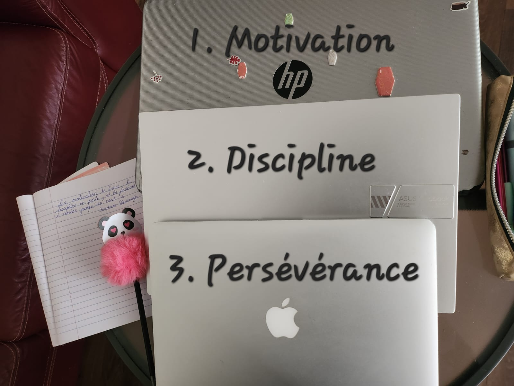 Bâtir sa réussite Pour réussir, il ne suffit pas de rêver. Il faut d’abord la motivation, cette étincelle qui te pousse à te lever avec une idée en tête. Mais elle ne dure pas toujours. Alors vient la discipline, cette force tranquille qui t’oblige à avancer même quand tu n’en as pas envie. Et quand les obstacles surgissent, quand plus rien ne semble avancer, il ne reste qu’une chose : la persévérance. C’est elle qui te fait continuer, pas à pas, jusqu’à franchir la ligne. Réussir, ce n’est pas avoir de la chance. C’est avoir ces trois alliées dans ton sac : motivation, discipline, persévérance. Et ne jamais les lâcher. View](images/motivation.jpeg){kind=link}
![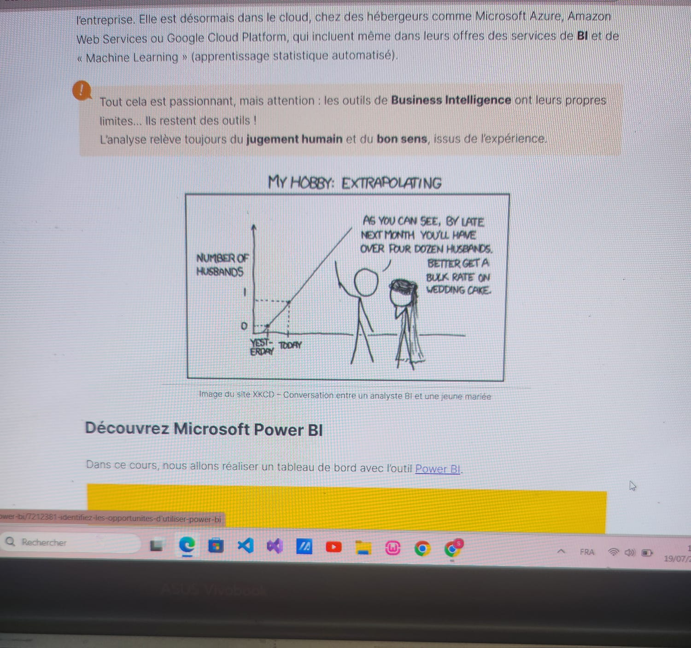 Pensée Algorithmique Depuis que j’ai découvert le monde du développement, j’ai rapidement été fasciné par la logique derrière le code. J’aime particulièrement concevoir des algorithmes efficaces et comprendre comment les données sont organisées et manipulées dans une base de données. Ce qui me passionne, c’est de résoudre des problèmes complexes avec des solutions simples. J’ai également un vrai plaisir à apprendre constamment de nouvelles technologies, langages ou méthodes de travail. Le code, pour moi, c’est à la fois un défi intellectuel et un terrain de jeu où je peux sans cesse progresser. View](images/code2.jpeg){kind=link}
![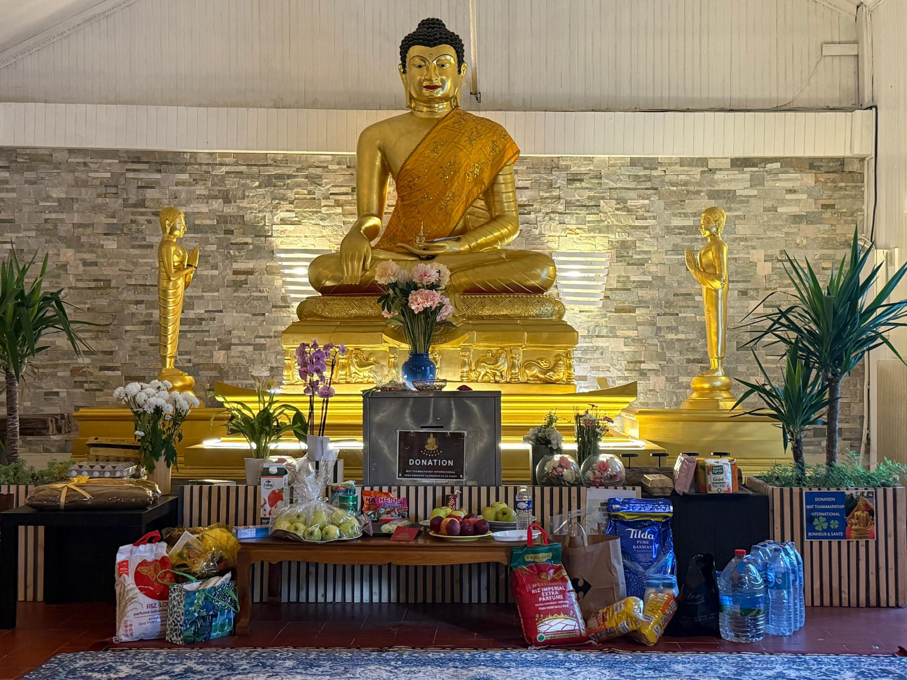 L’empreinte du Bouddha Il ne promet rien. Il ne répond pas aux prières. Il invite.Son regard ne te juge pas, il te traverse. Il voit ce que tu oublies souvent : ta lumière sous les doutes, ta force derrière les peurs. Autour de lui, le monde semble s'effacer non pas fuir, mais s'apaiser. Il ne t’oblige pas à croire, mais il te pousse à voir. À plonger là où naissent les vraies réponses : à l’intérieur. Car la paix n’est pas donnée, elle se découvre. Et ce regard de pierre sait très bien où chercher. View](images/Pagode.jpeg){kind=link}
{kind=link}
{kind=link}
{kind=link}
{kind=link}
{kind=link}
{kind=link}
![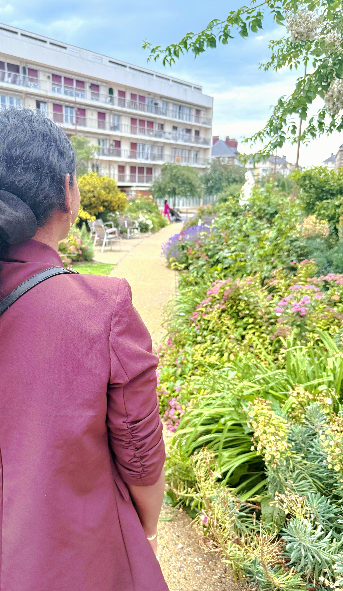 Éclats d’infini Je ne suis pas de temple ni de prière, Mais mon âme parle aux arbres, aux mers. Je ne connais pas les lois sacrées, Mais je sens le souffle des vérités. Je marche pieds nus sur le silence, À l’écoute de la danse des étoiles. Chaque battement, chaque absence, Devient langage dans mes toiles. Je crois en l’aube après la nuit, En la lumière que l’on ne voit pas. Je cueille l’invisible fruit Qui pousse au creux de l’émoi. Je suis l’enfant du vent, du feu, Je cherche Dieu sans nom, sans lieu. Non dans les livres, mais dans l’instant, Dans un regard, dans le vivant. View](images/Jardin.jpg){kind=link}
{kind=link}
![Le danger peut être partout.. Les récents événements rapportés au tamil nadu , dans l'inde entiere et dans différents pays rappellent que la vigilance est essentielle partout. Les pédophiles ne sont pas toujours ceux que l’on imagine. Ce sont des prédateurs sexuels obsessionnels qui cherchent à assouvir leurs pulsions par tous les moyens, au mépris total de la loi, de la morale sans aucune barrière éthique, psychologique ou légale. Ils peuvent paraître gentils, respectables, protecteurs ou même critiquer publiquement les pédophiles pour détourner les soupçons. C’est pour cela qu’il faut rester vigilant et arrêter de croire que le danger vient uniquement des inconnus. Les prédateurs pédophiles peuvent se trouver partout : sur les réseaux sociaux, dans l’entourage proche, dans les lieux de confiance, et parfois même au sein de la famille. Ils peuvent parfois donner l’image d’une vie normale, heureux ou équilibrée, alors que la réalité intérieure ou leurs comportements peuvent être très différents. Les auteurs de violences sexuelles sur mineurs ne correspondent pas à un seul profil psychologique. Ils peuvent avoir des apparences même si 90 à 98 % sont des hommes, il existe aussi 2 à 10 % de femmes selon les statistiques criminologique ils peuvent avoir des comportements très différents. La pédocriminalité est une réalité plus présente qu’on ne le pense souvent. Il est important de préciser qu'il est inacceptable que certains utilisent ces sujets à des fins politiques ou médiatiques, car cela revient à instrumentaliser des situations extrêmement graves pour servir des intérêts personnels ou stratégiques. Je trouve cela profondément choquant et inacceptable. Méfiez-vous, informez-vous et protégez les plus vulnérables. View](images/Triste.jpeg){kind=link}
![L'art du stoïcisme ✨️ L’art de rester stoïque, c’est garder son calme même quand plusieurs voix inutiles s’élèvent autour de nous. Être stoïque, c’est se concentrer sur ce qui est essentiel plutôt que de gaspiller son énergie dans des conflits inutiles. C’est comprendre que toutes les critique ne méritent pas une réponse. C’est savoir prendre du recul face aux provocations et au chaos. C’est garder la tête froide quand les autres s’emportent. C’est avancer avec patience, discipline et dignité, même sous pression. C’est laisser le temps et les actions parler plus fort que les rumeurs. Et parfois, la plus grande force, ce n’est pas de répondre… mais de rester calme pendant que les autres perdent le contrôle. View](images/1778761733628.png){kind=link}
![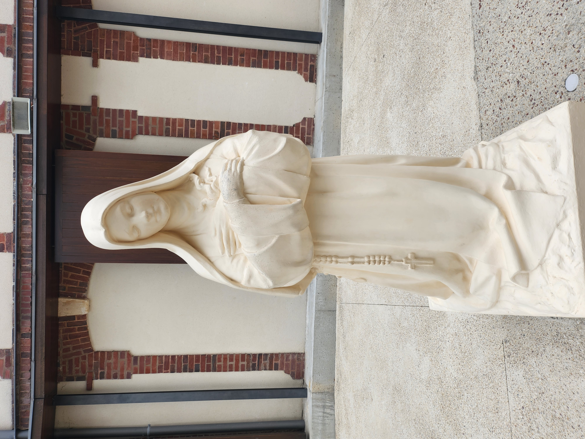 la Petite Fleur Lisieux 13.06.2025, J’ai toujours admiré ces âmes rares qui consacrent leur vie entière à Dieu ou cette Energie Suprême, dans une offrande totale, dénuée d’intérêt personnel. Il y a en elles quelque chose d’incompréhensible pour notre époque : une force intérieure, presque surnaturelle, qui les pousse à se détacher de tout désir, de tout bien matériel, pour s’unir à une réalité invisible, plus haute, plus pure. J'ai toujours ressenti, qu’il existe une énergie suprême, une Présence, un Souffle, un Mystère. Mais je sais qu’y accéder demande une rigueur, une épure, une austérité presque inhumaine. Car l’être humain, par nature, est avide : avide de possessions, de plaisirs, de reconnaissance. Et pourtant, quelques-uns réussissent à s’élever au-dessus de cette nature, à dompter leurs instincts, à se dépouiller de tout, jusqu’à devenir lumière. Aujourd’hui, beaucoup se revendiquent saints. Mais très peu, en vérité, le sont réellement. Et ceux-là, les vrais, les silencieux, les humbles méritent d’être honorés, rappelés, célébrés. Parmi eux, Thérèse de Lisieux, qu’on appelle tendrement "la Petite Fleur", tient une place unique dans mon coeur. Si jeune, si simple, et pourtant si grande dans son abandon. J’ai eu la grâce de marcher sur ses traces, de visiter les lieux où elle a vécu, prié, aimé. Là-bas, tout semble encore habité par sa présence discrète. On y sent le parfum de son offrande, la tendresse de son âme tournée vers le ciel. Elle n’a pas accompli de grandes œuvres aux yeux du monde, mais son amour, offert dans les moindres gestes, a fait d’elle une géante de lumière. View](images/Therese.jpg){kind=link}
{kind=link}
![Lune d'argent La lune danse sur le velours de la nuit, Telle une étoile perdue, silencieuse, en fuite. Elle éclaire les âmes, les cœurs et les pensées, D'un éclat pur, doux, et sans jamais s’arrêter. Elle flotte, tranquille, loin de toute souffrance, Comme un rêve d'argent, suspendu dans la danse. Ses rayons bercent l'infini, apaisent les esprits, Et chaque nuit, elle guide les pas des oubliés. Elle est la complice des secrets murmurés, Des promesses chuchotées, des rêves partagés. Dans son sourire, le monde trouve sa clarté, Elle est la lumière, l’éternelle sérénité. View](images/Lune1.jpg){kind=link}
{kind=link}
{kind=link}
{kind=link}
{kind=link}
{kind=link}
{kind=link}
{kind=link}
{kind=link}
{kind=link}
{kind=link}
{kind=link}
{kind=link}
{kind=link}
{kind=link}
{kind=link}
{kind=link}
{kind=link}
{kind=link}
{kind=link}